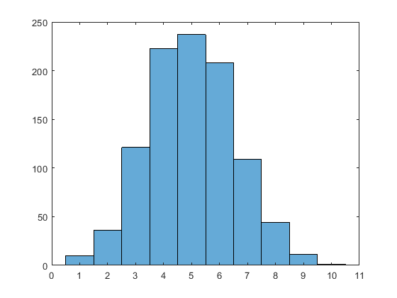
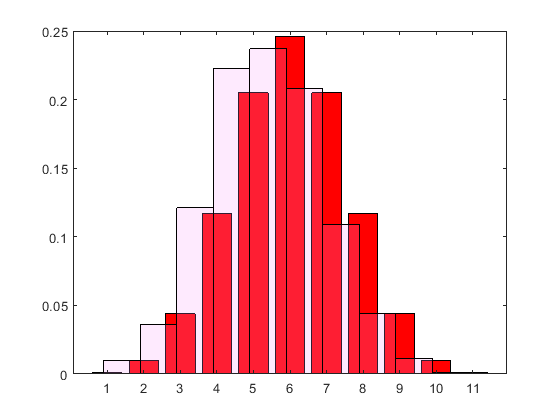

Contents
zadanie J
stats =
struct with fields:
chi2stat: 14.4000
df: 6
edges: [0.5000 1.5000 2.5000 3.5000 4.5000 5.5000 6.5000 7.5000]
O: [8 12 9 12 19 5 5]
E: [10 10 10 10 10 10 10]
p =
0.0255
zadanie K
ans =
1000
statsK =
struct with fields:
chi2stat: 27.4772
df: 26
edges: [1×28 double]
O: [1×27 double]
E: [1×27 double]
pK =
0.3847
zadanie L.1

zadanie L.2

zadanie L.3
statsL3 =
struct with fields:
chi2stat: 4.2750
df: 8
edges: [1×10 double]
O: [10 36 121 223 237 208 109 44 12]
E: [1×9 double]
pL3 =
0.8315
zadanie L.4
statsL4 =
struct with fields:
chi2stat: 4.2751
df: 8
edges: [1×10 double]
O: [10 36 121 223 237 208 109 44 12]
E: [1×9 double]
pL4 =
0.8315